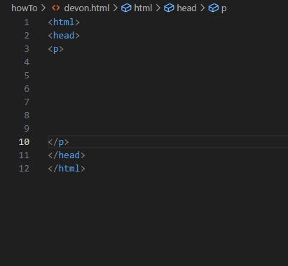
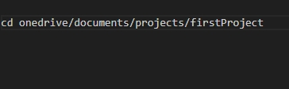
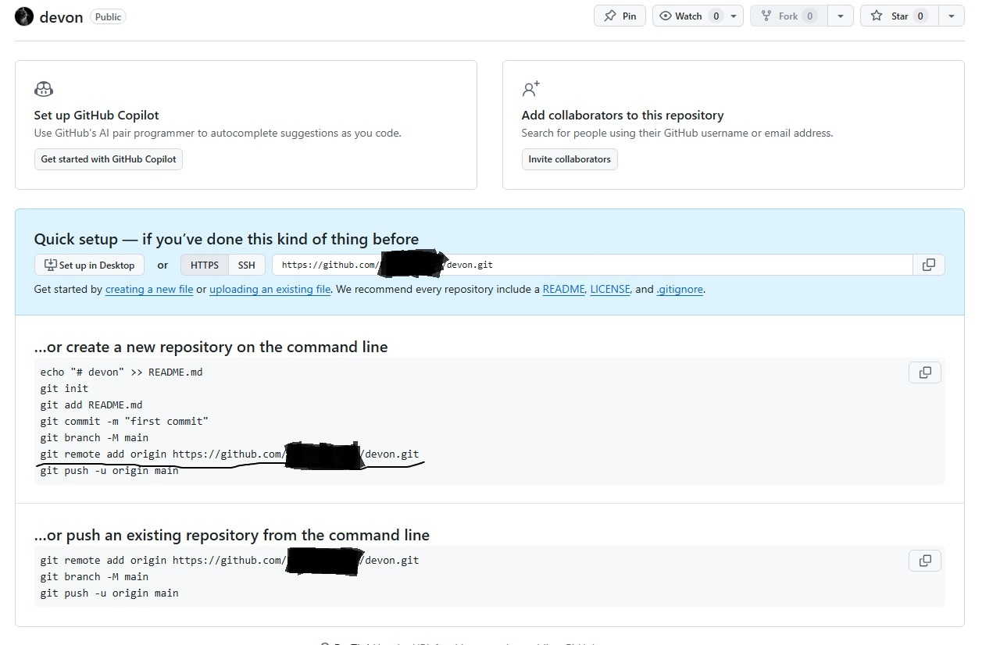

When beginning an html website from scratch, it is important to do all the main steps involved
We will look at how to create a website from scratch and get it online.
The first step to begin with is to create files for your site. A really common place is called the File Explorer. This is where you should store your files for your data. Make sure to keep your files organized in the 'Documents' folder. Create folders for your images, videos, and anything else you may want to link to. After you have created your folders, you need to open a text editor called 'Notepad'(which can be found using the windows search)
Notepad is a default text editor for your computer, it is the best place to begin to construct your website. Once you have opened Notepad you can begin
The most crucial part of constructing a website is tags. Without them there would be no website. The most common are the tags: html, p, head, title, and the link tags. Around each of the tags you need to put both of the greater than and less than symbols, the open part facing toward the word. structure it like this:
If you would like to learn more tags, highly recommended, there are many websites that have a list of them all. Another free, helpful source is the epallinonehighschool.comwebsite.
The next crucial part to creating a website is getting it online, but to do this you will need to start a Github account using Github.com. You don't have to use Github, but it is easier. Next, you need to start a repository and name it something you will remember (make sure that you make a file folder for it in File Explorer.) You will be taken to a screen with different codes. Keep it, don't lose it. Next, open something called GitBash. It's a command line which you will need for your website. Using the command line you need to change directories like this:
The (cd onedrive/documents/projects/firstProject) is the folder names we 'change directory' or 'cd'
After this you can type cd (whatever your repository folders name is), next you will initialize the repository by typing 'git init'. It will initialize, and then you can type 'git remote add origin https://github.com/ and whatever else your repository sheet says.
Next, you will type in 'git add .'(include the period in the command!) After this step it will ask who you are type in:
git config –global user.email “Put your Github email address here“
git config –global user.name “Type your name in here, first and last name“
Then, you will type 'git commit -m "Create page." '(include all that is within the 's .) Finally, you will type 'git push -u origin master'.
This will push your data to Github, and you will be able to begin getting your website online
Getting your website isn't as hard as it seems. What you need to do it to is to go to Github pages in the settings and change your branch to the master branch. After a little while your site should be live, and now you are ready to add to it.
To make changes to your website all you need to do is to open an online text editor like VSC text editor. Make changes using your tags and anything else you want to do. Then after you've added all you want, then you need to open GitBash you need to cd back to your repository's folder. You then need to type git add . then you need to type in 'git commit -m "your command."' finally to push all of the changes to your website you need to typegit push origin master
Those are the basic steps to creating a website. For more in depth website creation you could use websites like epallinonehighschool.com or Javascript